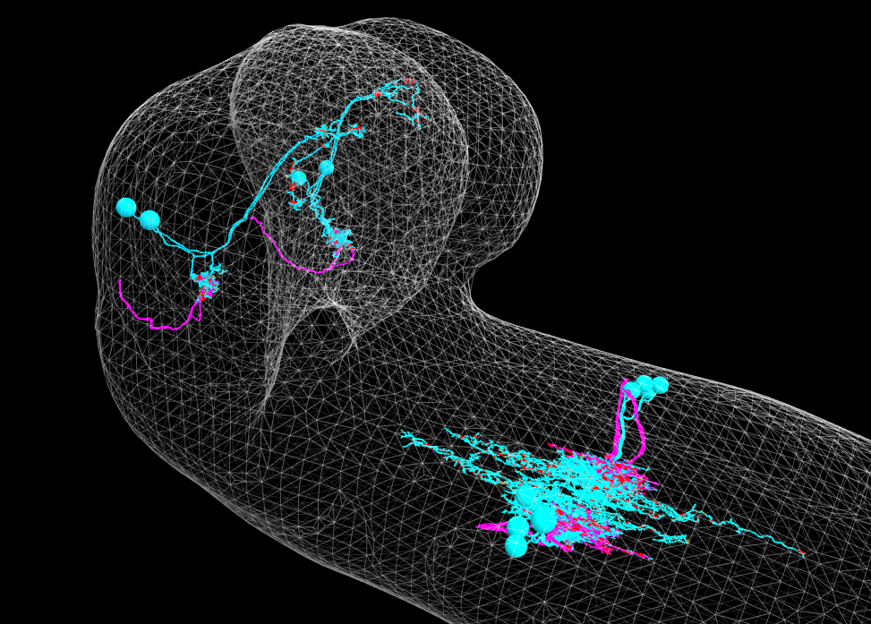

Cardona lab
Bentley et al. (2016). The Multilayer Connectome of Caenorhabditis elegans
membrane
raw
synapse
 PN and a1 cho -> Basin">
Berck et al. (2016) The wiring diagram of a glomerular olfactory system